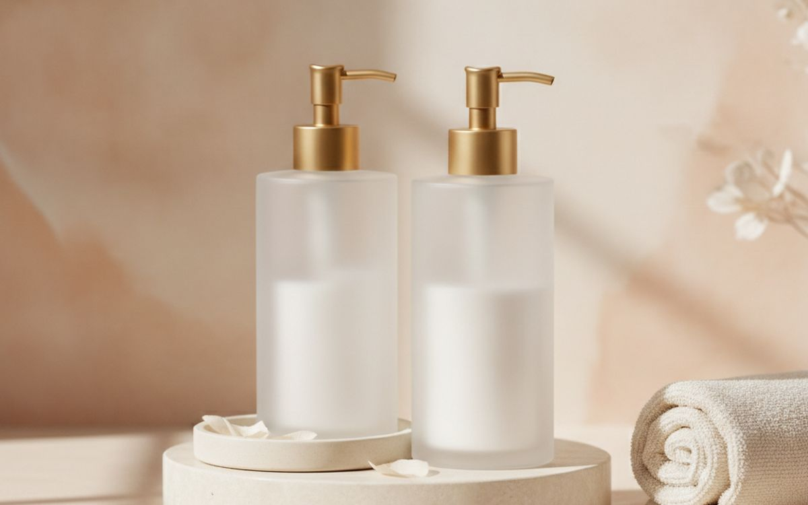
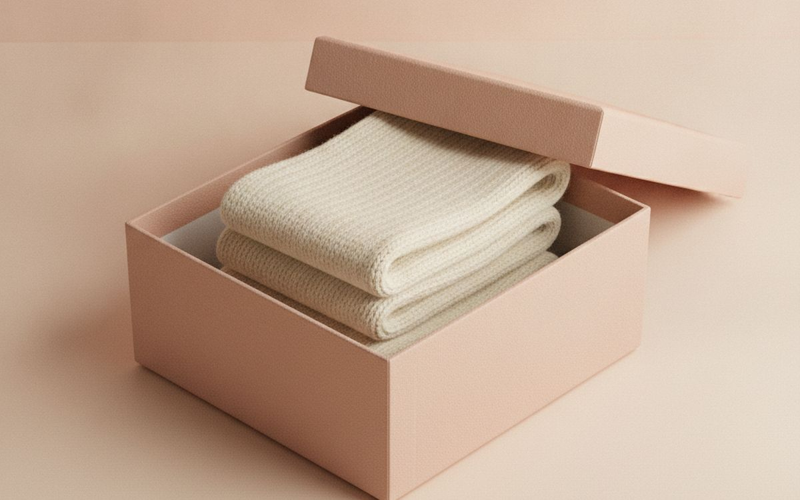
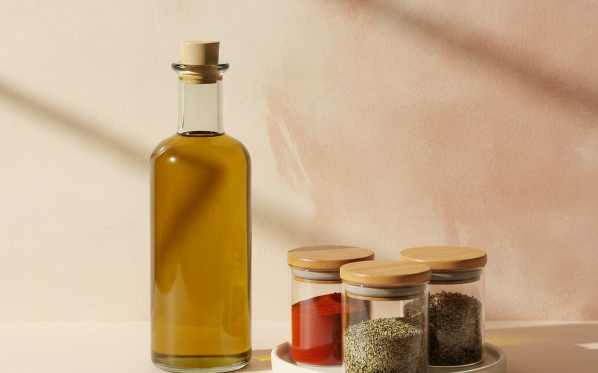
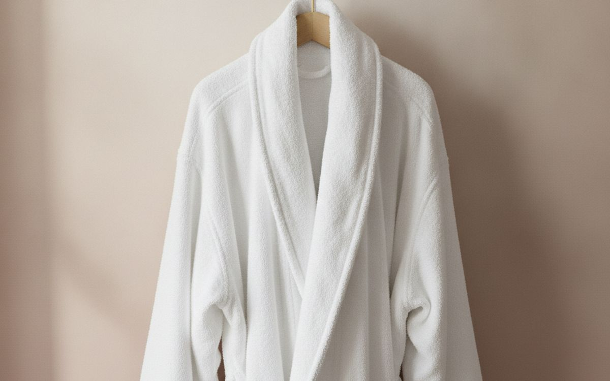
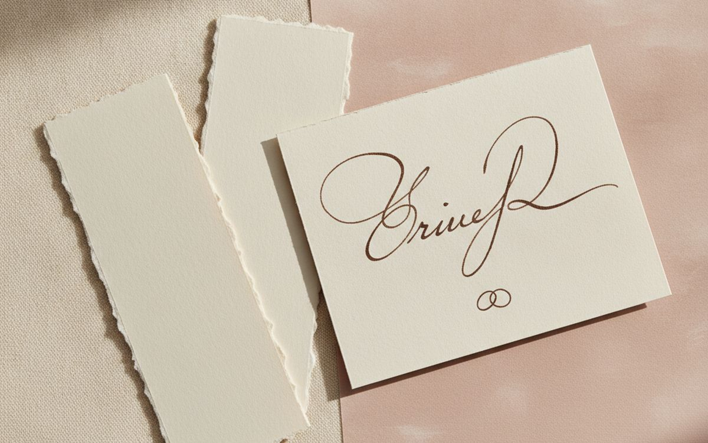
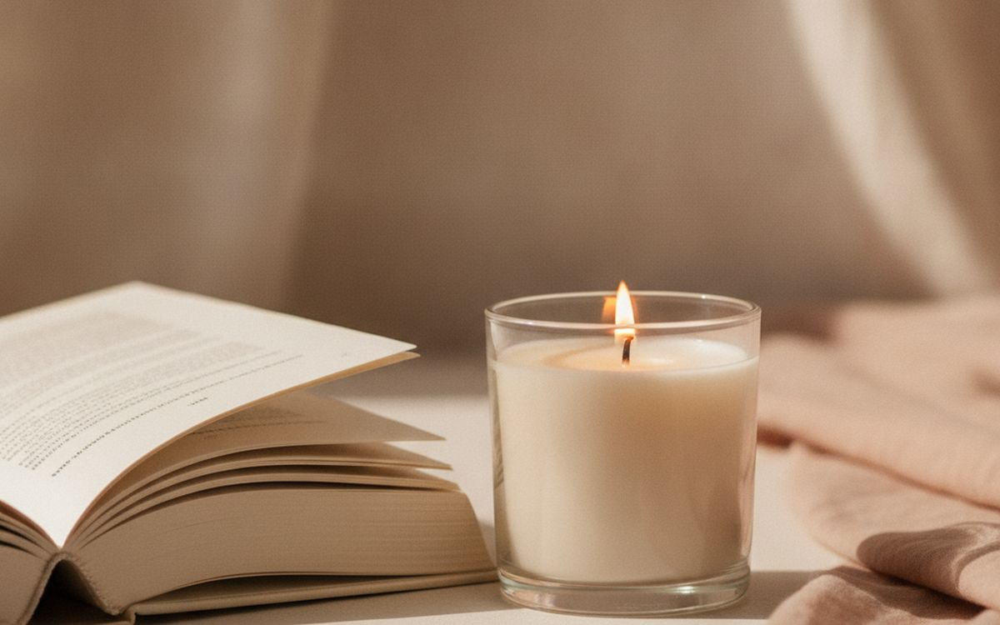
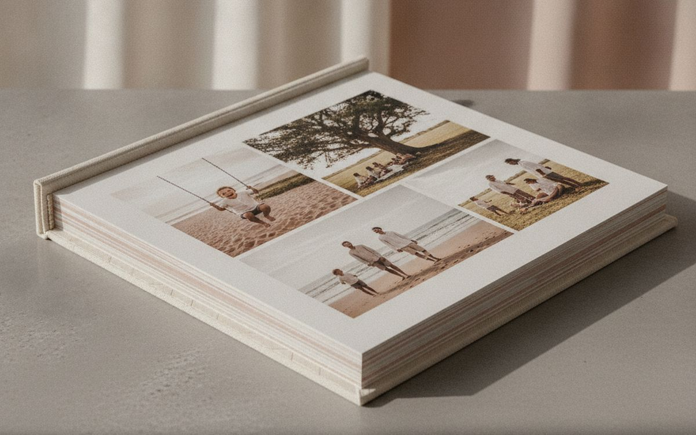
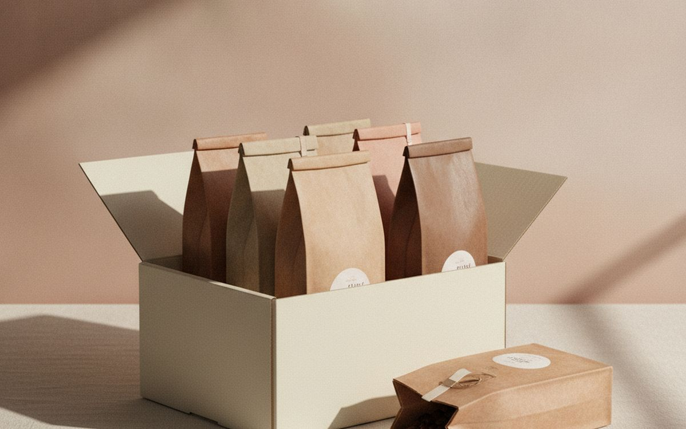
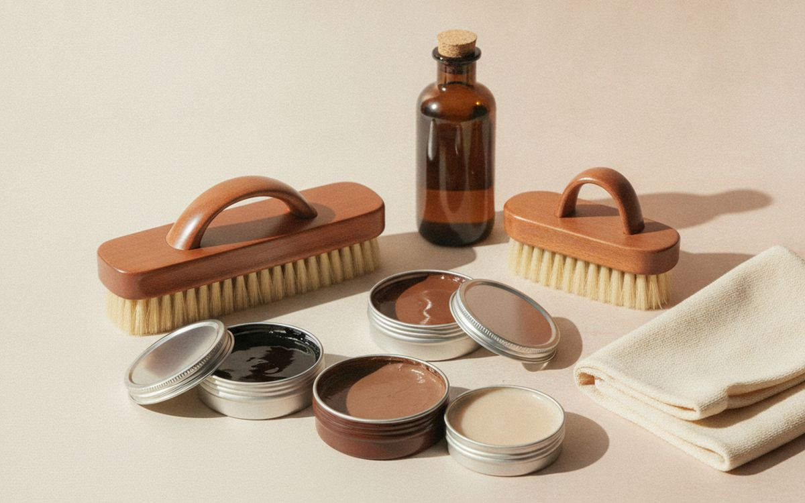
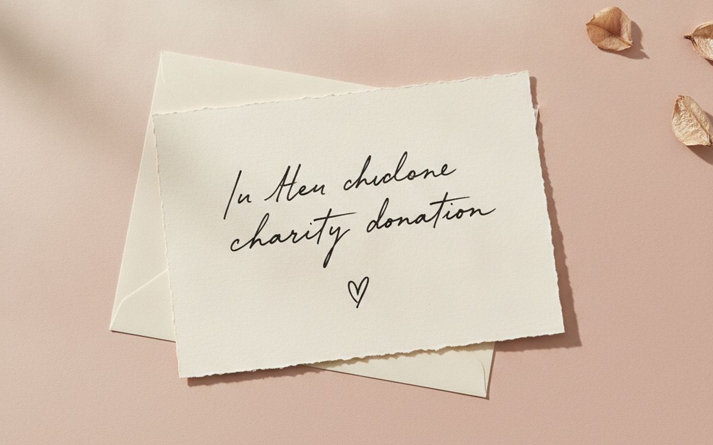

Everyone has someone who answers "what do you want?" with "nothing, really". Usually it is true: they do not want more things. They do not want another mug, another gadget, or anything that needs a shelf. What they will appreciate is a gift that gets used up, replaces something they already use with a better version, or gives them time and experience instead of objects.
This list is ordered by how likely each gift is to be used and appreciated. Consumables and quiet upgrades come first. Gadgets are left out almost entirely, on purpose.
Prices below are approximate street prices at the time of writing and move around constantly, especially during sale events. Treat them as a rough band for budgeting, not a quote. Always check the live listing before you buy.
En resumen
A premium version of something they use up
The safest gift for the person who wants nothing
Aviso. Los enlaces de esta página son de afiliados. Si compras a través de uno podemos ganar una comisión sin coste adicional para ti. No influye en qué entra en esta lista ni en su orden.
Cómo lo elegimos
These picks come from gift-giving research, reader feedback patterns and long-run owner reports, cross-checked against current retail listings. We have not personally tested every item here. We favoured gifts that disappear, replace a worn item or create time together.
De un vistazo
Los precios son aproximados en el momento de escribir y cambian a menudo.
Las recomendaciones

01 · The safest gift for the person who wants nothingA premium version of something they use up
Think about what they use every day: hand soap, coffee, shaving cream, lip balm, notebooks. A nicer version of that thing is a small luxury they would not buy for themselves, and it disappears when used, so it adds no clutter. Look at what they actually use and buy the premium edition. Watch for scent and skin preferences. The case for it: gets used up, no clutter, a small luxury they would not buy, and easy to personalise. The trade-off is real: requires noticing what they use and scents are personal, so weigh that against how often it would actually get used.
$15-40Lo que aceptas: Requires noticing what they use
Por qué está aquí
- Gets used up, no clutter
- A small luxury they would not buy
- Easy to personalise
Conviene saber
- Requires noticing what they use
- Scents are personal

02 · Everyday comfortA really good pair of socks
It sounds dull, but good merino socks are one of the most appreciated gifts there is. They are worn weekly, replace tired socks, and feel noticeably better. Brands like Darn Tough have lifetime guarantees. Pick a neutral colour. The case for it: worn constantly, replaces worn basics, and noticeably comfortable. The trade-off is real: sizing needed and can feel like an unexciting gift, so weigh that against how often it would actually get used. For $15-30, it is a small, low-risk addition to the list rather than a centrepiece purchase you need to think hard about.
$15-30Lo que aceptas: Sizing needed
Por qué está aquí
- Worn constantly
- Replaces worn basics
- Noticeably comfortable
Conviene saber
- Sizing needed
- Can feel like an unexciting gift

03 · People who cookA quality olive oil or spice set
A bottle of excellent olive oil or a set of fresh, fragrant spices is a treat for anyone who cooks. It gets used in everyday meals and makes them better. Check the harvest date on olive oil; fresher is better. The case for it: used in everyday cooking, makes meals better, and no clutter. The trade-off is real: only suits people who cook and check harvest dates, so weigh that against how often it would actually get used. Priced around $20-45, it is easy to justify even if it only ends up getting occasional rather than daily use.
$20-45Lo que aceptas: Only suits people who cook
Por qué está aquí
- Used in everyday cooking
- Makes meals better
- No clutter
Conviene saber
- Only suits people who cook
- Check harvest dates

04 · Replacing worn basicsA plush bathrobe or towel upgrade
Most people use their towels and bathrobe long after they become thin and scratchy. A plush new version is used every day and feels like a hotel upgrade. Cotton or waffle weave in a neutral colour. The case for it: used daily, replaces worn basics, and feels luxurious. The trade-off is real: size and style preferences vary and cheap ones shed lint, so weigh that against how often it would actually get used. At $30-70, it earns its place on this list without asking for a big up-front commitment either way. As with anything on this list, check the exact listing details and current price before adding it to a cart.
$30-70Lo que aceptas: Size and style preferences vary
Por qué está aquí
- Used daily
- Replaces worn basics
- Feels luxurious
Conviene saber
- Size and style preferences vary
- Cheap ones shed lint

05 · Time, not thingsAn experience voucher or booked outing
Tickets to a show, a cooking class, a museum membership or a booked dinner give them time and memories without adding objects. Going together makes it more meaningful. Choose something they would enjoy but not book themselves. The case for it: no clutter, creates memories, and time together. The trade-off is real: needs scheduling and vouchers sometimes go unused, so weigh that against how often it would actually get used. For $30-100, it is a small, low-risk addition to the list rather than a centrepiece purchase you need to think hard about.
$30-100Lo que aceptas: Needs scheduling
Por qué está aquí
- No clutter
- Creates memories
- Time together
Conviene saber
- Needs scheduling
- Vouchers sometimes go unused

06 · Cosy eveningsA candle or diffuser refill
A good candle gets burned and finished, which makes it a clutter-free gift. If they already own a diffuser, a refill of their favourite scent is thoughtful. Choose subtle scents unless you know their taste. The case for it: gets used up, cosy, and easy to wrap. The trade-off is real: scent is very personal and some candles emit soot, so weigh that against how often it would actually get used. Priced around $15-35, it is easy to justify even if it only ends up getting occasional rather than daily use. None of that makes it essential for everyone reading this, only worth knowing about if the description above matches how you actually use the space.
$15-35Lo que aceptas: Scent is very personal
Por qué está aquí
- Gets used up
- Cosy
- Easy to wrap
Conviene saber
- Scent is very personal
- Some candles emit soot

07 · Sentimental giversA photo book of the past year
A printed photo book of the past year's trips, family moments or pets is meaningful and small. It takes an evening to create online. People who say they want nothing often treasure these most. The case for it: deeply personal, small, and treasured for years. The trade-off is real: takes time to make and order early for delivery, so weigh that against how often it would actually get used. At $25-50, it earns its place on this list without asking for a big up-front commitment either way. As with anything on this list, check the exact listing details and current price before adding it to a cart.
$25-50Lo que aceptas: Takes time to make
Por qué está aquí
- Deeply personal
- Small
- Treasured for years
Conviene saber
- Takes time to make
- Order early for delivery

08 · Ongoing treatsA subscription for coffee, tea or snacks
A few months of specialty coffee, tea or snacks becomes a gift that arrives repeatedly. It is consumable, and the recipient gets to try new things. Pick a set number of months rather than an open subscription. The case for it: consumable, arrives repeatedly, and introduces new things. The trade-off is real: must check delivery area and cancel on time to avoid renewals, so weigh that against how often it would actually get used. For $20-40 per month, it is a small, low-risk addition to the list rather than a centrepiece purchase you need to think hard about.
$20-40 per monthLo que aceptas: Must check delivery area
Por qué está aquí
- Consumable
- Arrives repeatedly
- Introduces new things
Conviene saber
- Must check delivery area
- Cancel on time to avoid renewals

09 · Looking after what they ownLeather care or shoe care kit
People who want nothing new often take care of what they own. A good shoe or leather care kit with brushes, cream and cloths helps their favourite boots, bags and belts last longer. The case for it: extends the life of things they love, consumable, and practical. The trade-off is real: only suits leather owners and colour-match polish, so weigh that against how often it would actually get used. Priced around $15-35, it is easy to justify even if it only ends up getting occasional rather than daily use. None of that makes it essential for everyone reading this, only worth knowing about if the description above matches how you actually use the space.
$15-35Lo que aceptas: Only suits leather owners
Por qué está aquí
- Extends the life of things they love
- Consumable
- Practical
Conviene saber
- Only suits leather owners
- Colour-match polish

10 · People who truly want nothingA donation in their name
For someone who genuinely wants nothing, a donation to a cause they care about is often the most appreciated gift. Pair it with a handwritten card. Choose the cause carefully; it should reflect their values, not yours. The case for it: no objects at all, meaningful, and any budget. The trade-off is real: must match their values and check the charity's credibility, so weigh that against how often it would actually get used. At Any amount, it earns its place on this list without asking for a big up-front commitment either way.
Any amount ($0+)Lo que aceptas: Must match their values
Por qué está aquí
- No objects at all
- Meaningful
- Any budget
Conviene saber
- Must match their values
- Check the charity's credibility
Preguntas frecuentes
What should I buy someone who says they want nothing?
Something they use up, a better version of something they use daily, or an experience.
Are experiences better than gifts?
For people who dislike clutter, often yes, especially shared experiences.
Is a gift card okay?
For a specific store they love, yes. General gift cards can feel impersonal.
How do I avoid clutter gifts?
Choose consumables, replacements for worn items, or experiences.
Ofertas de hoy
Mira qué está rebajado ahora mismo.
Ofertas →← Todas las guías
Como afiliados de AliExpress, ganamos por las compras que cumplen los requisitos. Los precios y la disponibilidad son correctos en la fecha de publicación y pueden cambiar.